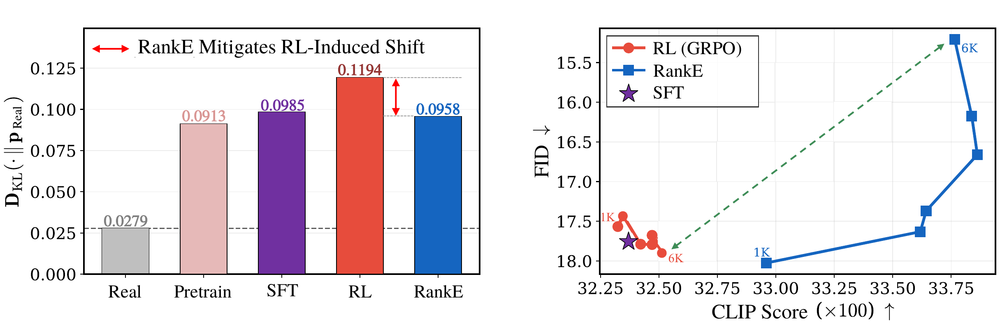
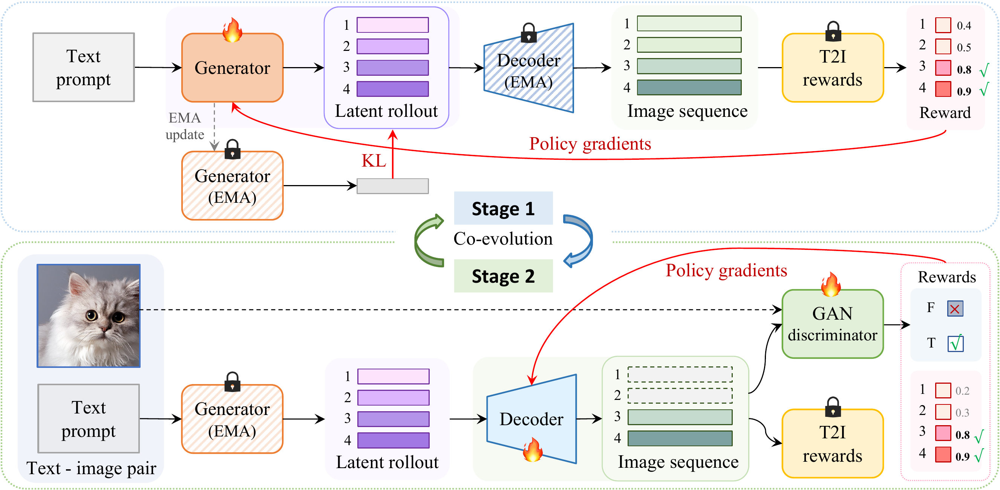
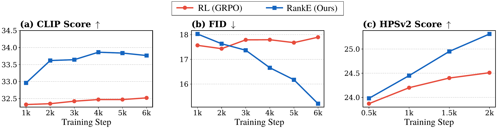
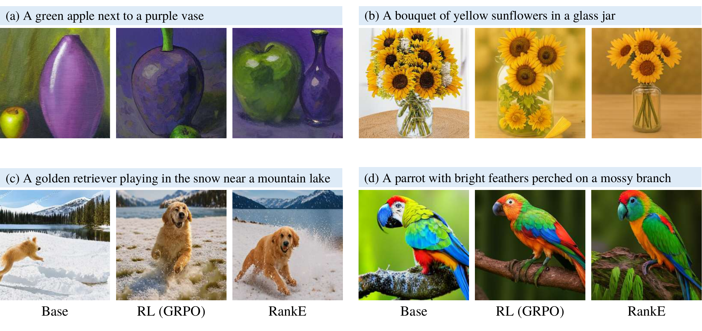

Abstract
Discrete autoregressive (AR) text-to-image (T2I) models pair a VQ tokenizer with an AR policy, and current post-training pipelines optimize only the policy while keeping the VQ decoder frozen. We show that this policy-only optimization induces Latent Covariate Shift: as the policy evolves under reward pressure, the token distribution diverges from the ground-truth distribution on which the decoder was trained, so reward scores improve while decoded image quality degrades.
To address this mismatch, we propose RankE — the first end-to-end post-training framework for discrete T2I generation. Rather than optimizing the policy against a fixed decoder, RankE co-evolves both components through alternating optimization: each module maximizes a ranking-based alignment objective while being regularized by a stability-preserving anchor suited to its parameter space. On LlamaGen-XL (775M), standard RL improves CLIP but degrades FID; RankE improves both simultaneously, reaching FID 15.21 and CLIP 33.76 on MS-COCO 30K, and consistent gains hold on Janus-Pro-1B and under the HPSv2 reward.
The Problem: Latent Covariate Shift
During tokenizer pre-training, the VQ decoder is trained exclusively on deterministic ground-truth codes $z_{\mathrm{gt}} = \mathrm{Quantize}(E(x))$, which occupy a restricted, low-variance region of the latent space. At inference, the same decoder receives tokens sampled from the AR policy, $\hat{z} \sim \pi_\theta(\cdot \mid y)$, whose distribution progressively diverges from this regime as the policy evolves under reward pressure.
This divergence produces a fidelity–alignment trade-off that policy-side tuning alone cannot resolve. GRPO applied to LlamaGen-XL improves CLIP yet degrades FID across checkpoints, and the KL divergence against ground-truth token statistics confirms that standard RL substantially widens the distributional gap relative to SFT.

Unlike exposure bias, which concerns the input context of the generator, Latent Covariate Shift targets the input distribution of the decoder — a mismatch that no amount of policy-level tuning can resolve.
The RankE Framework
RankE jointly evolves the policy and the decoder without differentiating through the discrete bottleneck. The name reflects two ranking-based mechanisms at complementary granularities: a token-level ranking objective drives the policy update, and a pixel-level ranking objective drives the decoder update. We cast this as a Generalized EM procedure with an alternating schedule.

A unified two-stage objective
Although the updates live on incompatible parameter spaces — discrete tokens for the policy $\pi_\theta$ and continuous pixels for the decoder $D_\phi$ — they share a common structure:
Crucially, $\mathcal{A}_\Psi$ is implemented through relative ranking rather than absolute reward magnitude: at every step we draw $G$ rollouts from the same prompt, score them with $r$, and update $\Psi$ toward higher-ranked samples. The two stages run alternately within each round and across $K$ rounds — reward information crosses the discrete bottleneck through the alternation rather than through any single gradient path.
Stage 1 — Token-level ranking via GRPO
With the decoder fixed, the policy is updated using Group Relative Policy Optimization. For each prompt, $G$ rollouts are drawn, decoded, scored under $r$, and converted into group-normalized advantages $A_i = (r_i - \mu_r) / \sigma_r$. The clipped-advantage loss is the token-level ranking term $\mathcal{A}_\theta$, and the KL against an EMA reference serves as the stability anchor $\Omega_\theta$.
Stage 2 — Pixel-level ranking via Rank-GAN
With the policy fixed, the decoder is allowed to track its evolving token distribution. The same $G$ rollouts that were just ranked in token space are now re-ranked in pixel space. Mirroring Stage 1, the decoder loss decomposes into an alignment block (Rank-GAN + differentiable reward) and a manifold-anchor block (ground-truth reconstruction + EMA-consistency distillation):
Rank-GAN is the key innovation in the decoder: it preserves the expected gradient magnitude of a vanilla GAN while concentrating updates on policy-preferred samples via reward-derived weights $w(\hat{z}_i) \propto \exp(r_i / \tau)$. Replacing Rank-GAN with a uniform GAN drops both CLIP and FID, confirming that reward weighting is the active ingredient.
Results
Quantitative — CLIP-based optimization
Standard RL improves CLIP but degrades FID; RankE co-evolves the decoder, achieving both higher CLIP and lower FID simultaneously. Green = gain over Std. RL.
| Backbone | Method (Reward) | Decoder | CLIP ↑ | FID ↓ | GenEval ↑ |
|---|---|---|---|---|---|
| LlamaGen-XL · 775M | |||||
| LlamaGen-XL | Base | Frozen | 31.54 | 15.24 | 0.309 |
| SFT | Frozen | 31.86 | 16.58 | 0.374 | |
| Std. RL (CLIP) | Frozen | 32.45 | 17.76 | 0.417 | |
| RankE (CLIP) | Co-Evol | 33.76 ↑1.31 | 15.21 ↓2.55 | 0.425 ↑.008 | |
| Janus-Pro · 1B | |||||
| Janus-Pro | Base | Frozen | 33.20 | 18.95 | 0.740 |
| SFT | Frozen | 33.31 | 26.73 | 0.739 | |
| Std. RL (CLIP) | Frozen | 33.60 | 25.59 | 0.746 | |
| RankE (CLIP) | Co-Evol | 33.86 ↑0.26 | 25.19 ↓0.40 | 0.750 ↑.004 | |
Quantitative — HPSv2-based optimization
Gains generalize to non-differentiable rewards: under HPSv2, RankE improves preference alignment in pixel space while preserving compositional generalization on GenEval.
| Method | Decoder | HPSv2 Photo | Concept | Anime | Avg ↑ | GenEval ↑ |
|---|---|---|---|---|---|---|
| Base | Frozen | 0.2364 | 0.2107 | 0.2183 | 0.2196 | 0.309 |
| SFT | Frozen | 0.2281 | 0.2202 | 0.2222 | 0.2221 | 0.374 |
| Std. RL (HPSv2) | Frozen | 0.2466 | 0.2435 | 0.2436 | 0.2451 | 0.418 |
| RankE (HPSv2) | Co-Evol | 0.2492 | 0.2479 | 0.2453 | 0.2531 | 0.423 |
Training dynamics
RankE monotonically improves both metrics while standard RL degrades FID as training progresses.

Qualitative Comparisons
Across matched prompts, the base model frequently misses prompt attributes (color, count, spatial relations); standard RL improves adherence at the cost of visible artifacts — a direct consequence of the frozen decoder processing latents drawn from a distribution it was never trained on. RankE produces images with both faithful attributes and high perceptual quality.

Citation
@article{Jian2026RankE,
title={RankE: End-to-End Post-Training for Discrete Text-to-Image Generation with Decoder Co-Evolution},
author={Jian, Siyong and Li, Siyuan Glen and Zhang, Luyuan and Wang, Zedong and Jin, Xin and Li, Ying and Tan, Cheng and Wang, Huan},
journal={arXiv preprint arXiv:2605.21195},
year={2026}
}